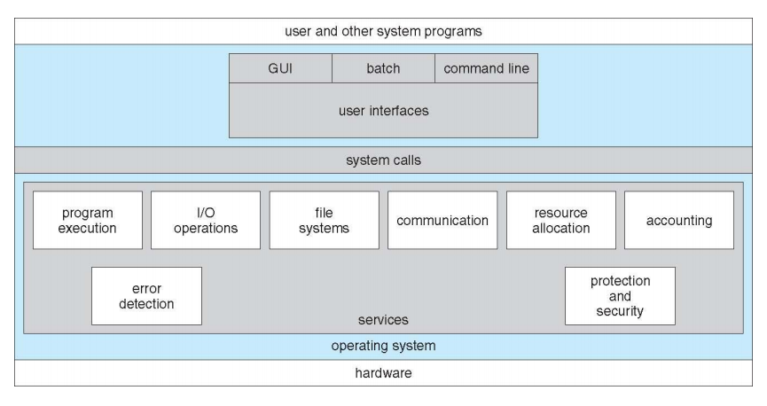
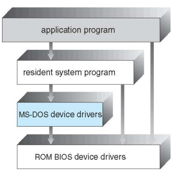
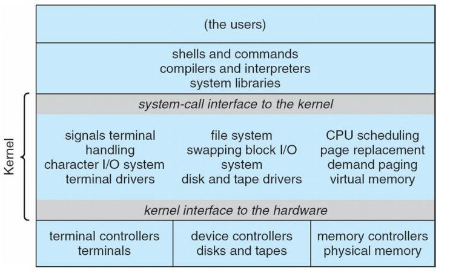
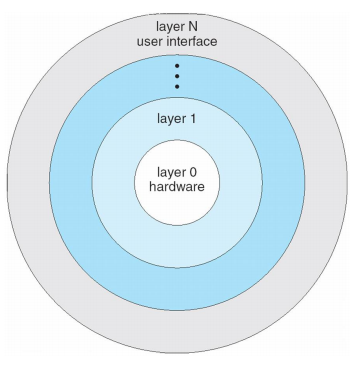
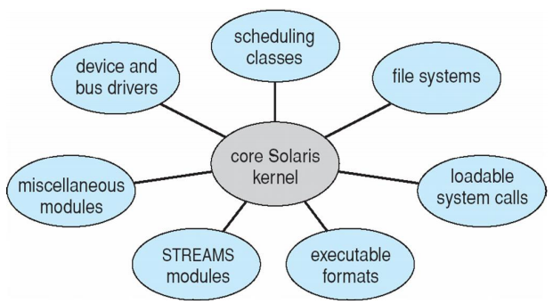
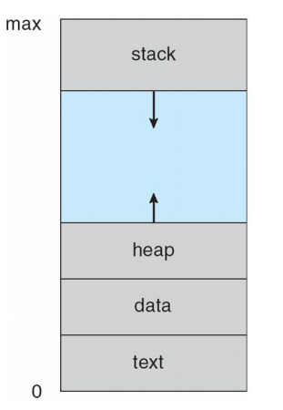
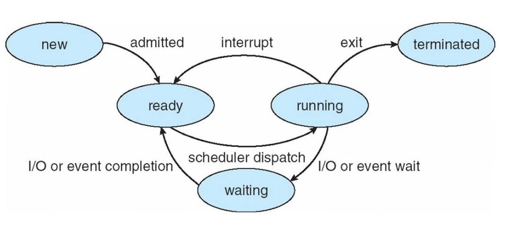
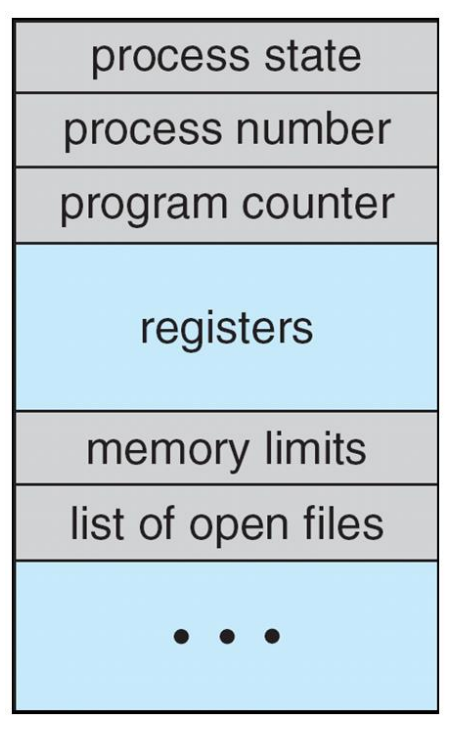

Database
This part inlcudes important topics in OS.
Content outline
- 操作系统服务

- 方便用户的服务
- 用户界面 / User Interface
- 程序执行 / Program Execution
- I/O操作 / I/O Operation
- 文件系统操作 / File-system Manipulation
- 通信 / Communications
- 错误检测 / Error Detection
- 保证效率的服务
- 资源分配 / Resource Allocation
- 统计 / Accounting
- 保护和安全 / Protection and Security
- 系统调用/System Calls
- 操作系统结构
- 简单结构(Simple Structure)：MS-DOS

无良好定义的结构，没有模块之分，在最小的空间内提供最多的服务
- 整体式结构(Monolithic)：UNIX

系统程序+内核，有限分层
- 分层结构(Layered Approach)

- 微内核(Microkernel)：Mach
将所有非基本部分从内核移除，实现为系统程序或者用户程序，微内核主要功能是使各种服务通信
- 模块(Modules)：

核心内核+可加载内核模块，任何一个模块都可以加载任何一个模块且不需要调用消息传递来通信，核心内核只有核心功能以及其他模块加载和通信的相关信息
- 混合式(Hybrid)：Mac OS X kernel, Windows, Linux
- 操作系统设计与实现
- 进程的概念
- 进程(Process)与程序(Program)
- 程序：一段静态代码
- 进程：代码的执行实例，当一个程序被加载进入内存后，它就成为了进程；进程是动态的
- 内存中的进程-进程包含的内容

- 文本段：代码
- 数据段：全局变量
- 栈：临时数据，如函数参数、返回地址、本地变量
- 堆：动态分配内存空间
- 程序计数器、寄存器内容
- 进程状态

- 新的(new)：进程正在被创建
- 运行(running)：指令正在被执行，此状态已获得CPU资源，在任何一个CPU上，某时刻只有一个进程在运行
- 等待(waiting)：进程正在等待某事件发生，例如I/O结束
- 就绪(ready)：进程正在等待被分配给某CPU，此时需要进程调度
- 终止(terminated)：进程结束执行
- 进程控制块-表示、定位进程的数据结构

- 进程状态
- 程序计数器
- CPU寄存器
- CPU调度信息
- 内存管理信息
- I/O状态信息，打开文件列表
- 记账信息：CPU时间，使用时间，时间界限...
- 进程操作
Reference
Back